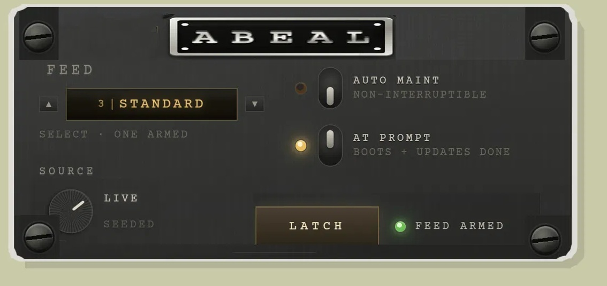

Third pass. Served by npm run mock at
http://127.0.0.1:8899/panel-rebuild-20260821/panel.html. The DIP
sliders, the FEED steppers and the SOURCE knob are live; the DOM is built once
and updated in place, so nothing is destroyed by a click.
